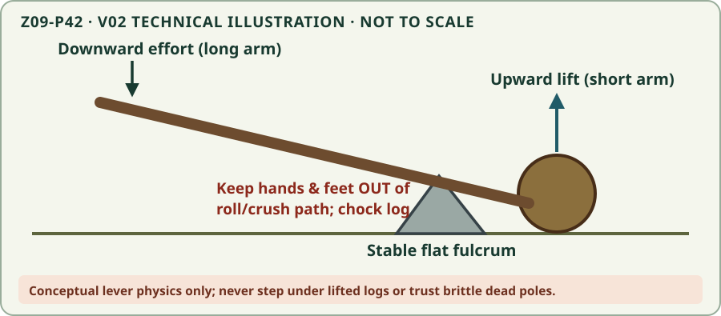

Z09-P42 · Tools and construction · New manuscript
Use first-class levers and stable fulcrums to shift heavy downed logs
Multiply modest human lifting force safely using a solid pry lever and firm fulcrum without standing in recoil zones.
When it applies · Rolling modest downed deadwood clear of a tent pad or shifting heavy camp gear safely (NOT lifting unstable vehicles or heavy collapsed structures).
Equipment · Sound straight stout hardwood lever pole, solid low fulcrum block (stone or stable log) and firm footing.

Actions
- Place a broad stable fulcrum block close to the load so the effort arm is much longer than the load arm—remembering ideal lever ratios trade longer handle movement for reduced hand force.[K06, K05]
- Test the lever pole gently first for hidden rot or bending cracks, stand to the SIDE rather than straddling the handle and keep feet completely clear of the rolling or dropping load path.[K05, K08, K06]
- Chock or block a lifted object immediately with solid cribbing if you must pause—never place hands, fingers or feet underneath a suspended load held only by a wooden lever.[K08, K05, ED]
Failure recognition · Leaning full body weight onto a brittle dead pine lever while standing downhill of a heavy log that rolls straight over ankles when shifted.[K05, K06, K08]
Verify · Confirm sound uncracked lever pole, broad stable fulcrum, clear downhill roll path and zero hands or feet under the lifted load.[K05, K06, K08, ED]
Stop or change course · Never attempt to lift vehicles, pinned storm trunks or trapped people with unrated wooden poles if uncontrolled shifting could crush anyone; stabilize and call emergency rescue.[K05, K08, T02]
Evidence and editorial notes
- K05 · USDA Forest Service · Handtools for Trail Work PDF (agency PDF)
- Section: Sawing, Splitting and Lever Principles · Conditions: Cutting downed wood, clearing deadfall and moving heavy logs safely
Support: Assess bind and tension in fallen logs before cutting so saws do not pinch or limbs spring back; use solid levers and fulcrums safely without standing in the recoil path of strained timber.
Limitations: Complex storm-damaged or hung-up trees require professional sawyers and are outside camp tool scope. · Conflicting evidence: None; informs spring-pole, saw-bind and lever mechanical-advantage cards.
Editorial note: Prevents kickback, saw pinching and recoil injuries in Z09. · Specialist reviewer: Forestry tool safety and mechanical safety
Primary source · checked 2026-11-24 - K06 · NPS · Forces and Tools (current web edition)
- Section: Forces and Tools > Simple Machines and Mechanical Advantage · Conditions: Levers, wedges, inclined planes and friction mechanisms
Support: Simple machines trade force for distance (levers, wedges, pulleys); friction, alignment and material strength limit real-world output below ideal ratios.
Limitations: Ideal mechanical advantage ignores friction losses and breaking strength of ropes or anchors. · Conflicting evidence: None; clarifies physical trade-offs without implying engineered load ratings.
Editorial note: Anchors mechanical-advantage, wedge-splitting and pulley/rigging limit cards. · Specialist reviewer: Mechanical engineering and rigging safety
Primary source · checked 2026-11-24 - K08 · OSHA · Hand and Power Tools (OSHA 3080) (agency PDF)
- Section: Personal Protective Equipment and Work Area Control · Conditions: Cutting, splitting, striking and rigging operations
Support: Maintain stable footing, eye and hand protection appropriate to flying chips or snapped cordage, and clear bystanders outside the swing or snap-back zone.
Limitations: Field kits often lack shop PPE, requiring slower conservative technique and lower-energy methods. · Conflicting evidence: None; drives snap-back and work-circle exclusion zones in Z09.
Editorial note: Enforces conservative work circles and snap-back clearance. · Specialist reviewer: Tool safety and occupational safety
Primary source · checked 2026-11-24
Current assessment · A04-K08 (2026-11-25) · Open: support partial or missing (A04): Eye protection requirements are task-specific. Safe stance, glove choice and recoil envelope require each tool or rigging source. Limits: Specialist review PENDING (Tool safety and occupational safety); publication HOLD. All release decisions pending. - T02 · American Red Cross · First Aid Steps (current web edition)
- Section: First Aid Steps > Call 9-1-1 · Conditions: Lay emergency response to unresponsiveness, abnormal breathing or severe bleeding
Support: Activate EMS and get needed equipment. Follow dispatcher directions and act within training.
Limitations: Remote locations may delay EMS arrival, requiring sustained stabilization after activation. · Conflicting evidence: None; aligns with NPS-E.
Editorial note: Mandates early emergency activation and dispatcher adherence. · Specialist reviewer: EMS and wilderness medicine
Primary source · checked 2026-11-24
Source lineage · NPS Forces and Tools and USFS handtools; new manuscript · Classification · New manuscript.